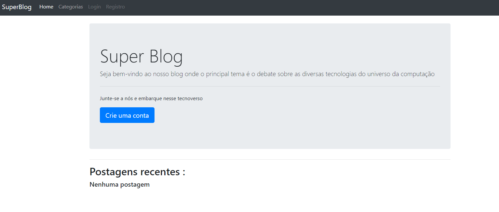

< Aplicação Web Super Blog />
Clique na imagem demonstrativa para acessar o aplicativo

Tecnologias: HTML, CSS, JAVASCRIPT, NODE JS, BOOTSTRAP, MONGODB
Objetivo: Aprender técnicas de desenvolvimento na
área do backend usando a ferramenta node js para definir conexão entre banco de dados e back-end
com o front-end o qual foi construído através da framework handlebars para gerar os elementos
html e o arquivo estático do bootstrap que tem um conjunto de classes css e funções javascript,
deve-se enfatizar também o uso de vários módulos sendo um dos mais importantes o express, ambos
os módulos foram baixados através do site npm que tem várias bibliotecas para desenvolvedores.
Descrição: O superblog é um ambiente para fazer postagens a respeito de tecnologias,
matemática e sobretudo desenvolvimento de sistemas para web, desktop ou criação de jogos.